Latest Release
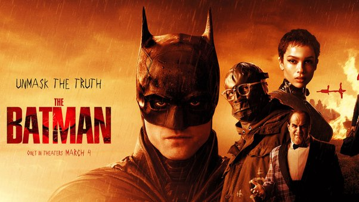
The Batman (2022)
Directed by Matt Reeves, this film presents a younger Batman in his early years of crime-fighting. Batman uncovers corruption in Gotham while pursuing the Riddler, a serial killer targeting the city's elite.
Watch NowMovies

Batman: The Movie (1996)
Batman and Robin face off against four supervillains—the Joker, the Penguin, the Riddler, and Catwoman—who have joined forces to dehydrate the world's leaders and hold them for ransom. Based on the 1960s TV series, this film features campy humor and action-packed adventures
Watch Now
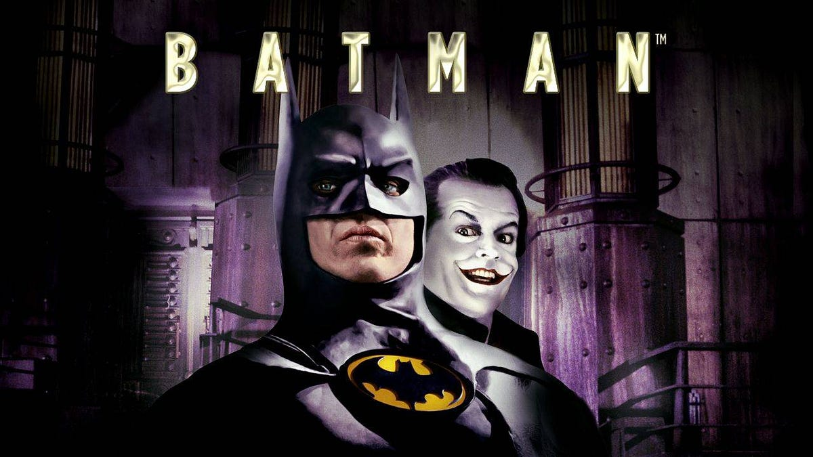
Batman (1989)
Directed by Tim Burton, this dark and atmospheric film follows Batman as he battles the Joker, a former mobster transformed into a psychotic villain after a chemical accident. The film explores the origins of both characters and their impact on Gotham City.
Watch Now
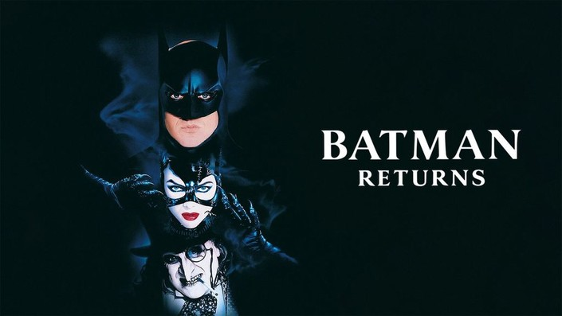
Batman Returns (1992)
In this sequel, Batman confronts the Penguin, a deformed villain with a tragic past, and Catwoman, a secretary turned vengeful antiheroine. Directed by Tim Burton, the film delves deeper into the dark and gothic atmosphere of Gotham City.
Watch Now
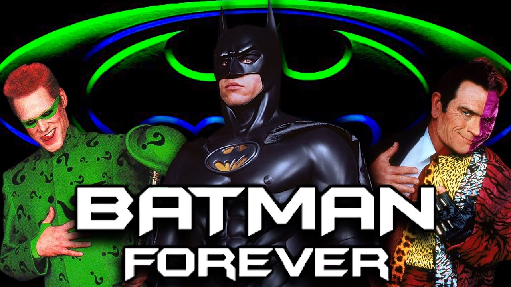
Batman Forever (1995)
Directed by Joel Schumacher, Batman faces Two-Face and the Riddler, who team up to uncover Batman's secret identity. The film introduces Robin, Batman's new sidekick, and explores Bruce Wayne's internal conflicts.
Watch Now
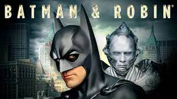
Batman & Robin (1997)
Also directed by Joel Schumacher, this film sees Batman and Robin struggle to stop Mr. Freeze and Poison Ivy from plunging Gotham into an eternal winter. The film is known for its colorful visuals and campy tone.
Watch Now
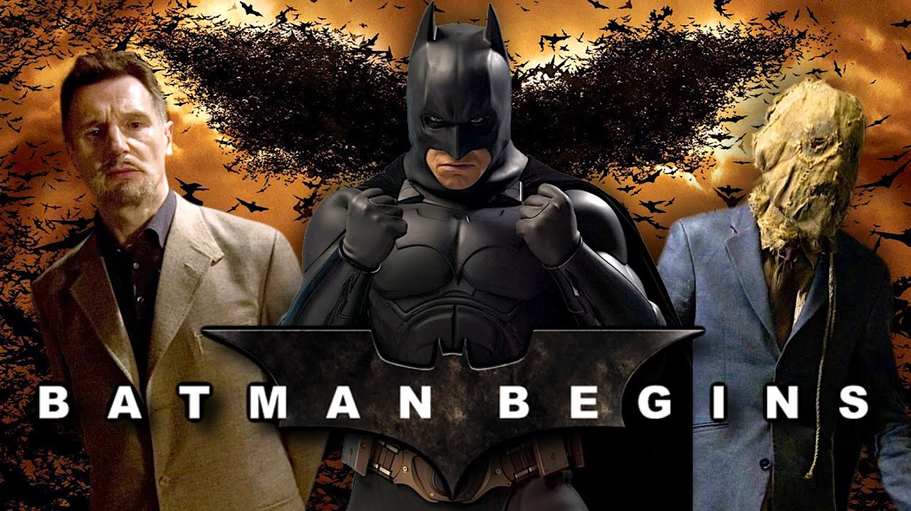
Batman Begins (2005)
Directed by Christopher Nolan, this reboot explores Bruce Wayne's journey from a traumatized orphan to the masked vigilante Batman. The film focuses on his training and early battles against crime in Gotham, particularly against the villain Ra's al Ghul and the Scarecrow.
Watch Now
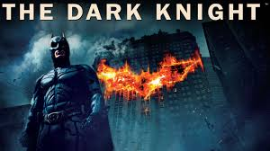
The Dark Knight (2008)
In this sequel, Batman faces his greatest challenge yet: the Joker, a chaotic and ruthless criminal mastermind. Directed by Christopher Nolan, the film delves into themes of chaos, morality, and the nature of heroism.
Watch Now
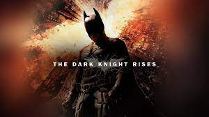
The Dark Knight Rises (2012)
The final film in Nolan's trilogy sees an older, reclusive Bruce Wayne returning as Batman to face Bane, a formidable adversary who threatens to destroy Gotham. The film explores themes of redemption and legacy.
Watch Now
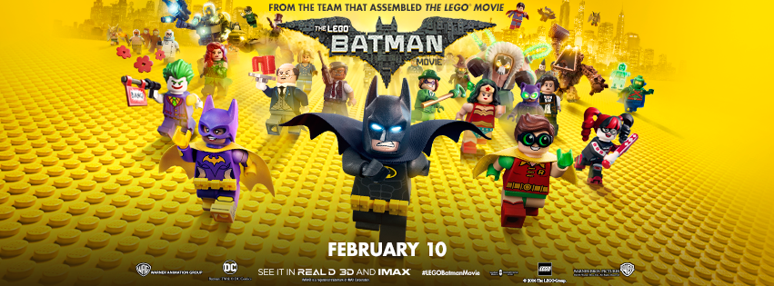
The Lego Batman Movie (2017)
This animated comedy features a self-absorbed and lonely Batman who learns the value of teamwork and family while facing a host of villains led by the Joker. The film is a humorous and affectionate parody of the Batman franchise.
Watch Now
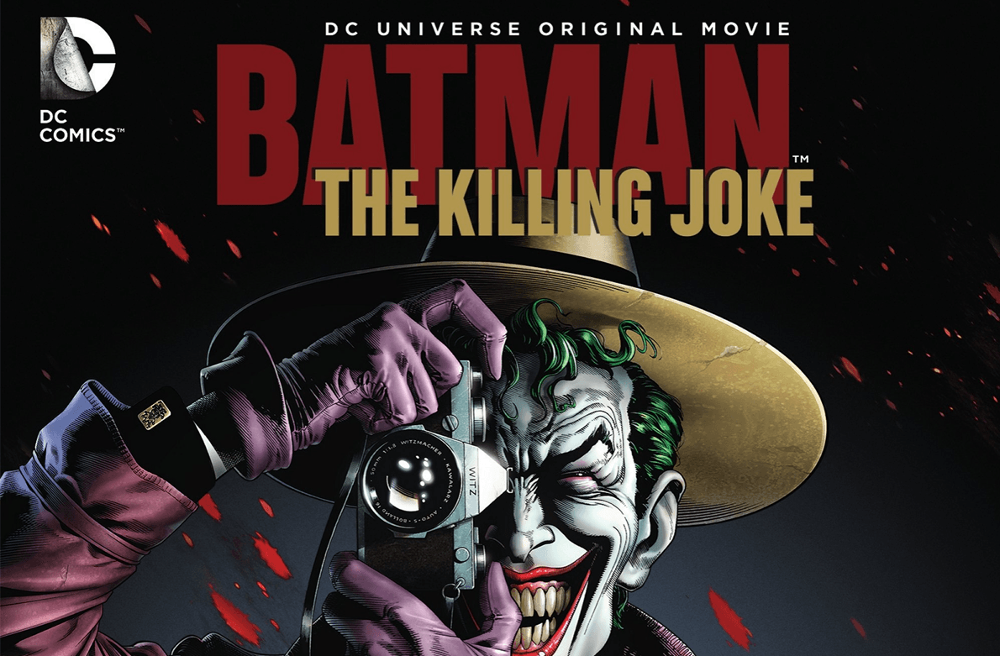
Batman: The Killing Joke (2016)
Based on the graphic novel by Alan Moore, this animated film delves into the origins of the Joker and his attempt to drive Commissioner Gordon insane. It also explores the complex relationship between Batman and the Joker.
Watch Now
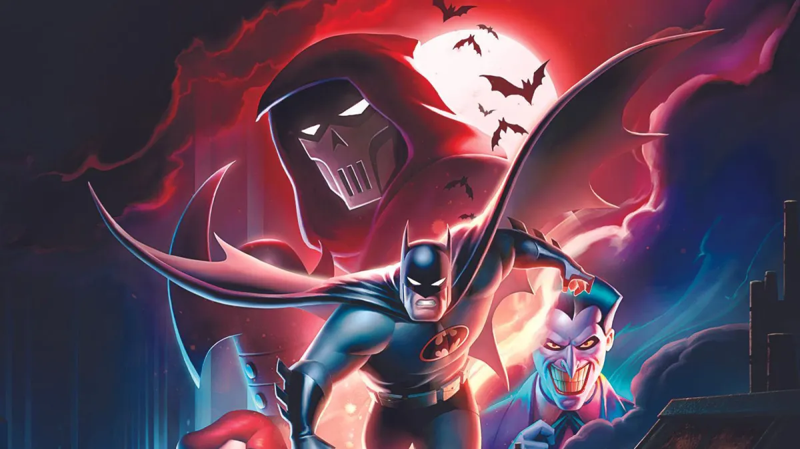
Batman: Mask of the Phantasm (1993)
In this animated film, Batman faces a mysterious new vigilante known as the Phantasm, who is targeting Gotham's underworld. The story also explores Bruce Wayne's past and his decision to become Batman.
Watch NowThe Batman (2022)
Directed by Matt Reeves, this film presents a younger Batman in his early years of crime-fighting. Batman uncovers corruption in Gotham while pursuing the Riddler, a serial killer targeting the city's elite.
Watch NowMovies Appeared On
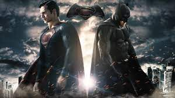
Batman v Superman: Dawn of Justice (2016)
In this movie, Batman and Superman face off due to differing ideologies. Bruce Wayne, worried about Superman's unchecked powers, seeks to stop him. Meanwhile, Lex Luthor orchestrates a plan to pit the heroes against each other, leading to a showdown that ends with them joining forces against a greater threat.
Watch Now
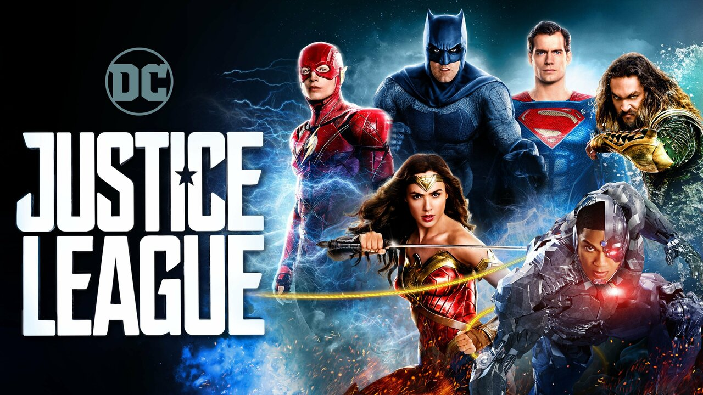
Justice League (2017)
Following Superman's death, Batman and Wonder Woman assemble a team of metahumans to protect Earth from the alien threat posed by Steppenwolf and his army. With the help of Aquaman, Cyborg, and The Flash, they aim to prevent the villain from using powerful artifacts called Mother Boxes to destroy the planet. Despite initial challenges, the team resurrects Superman and defeats Steppenwolf, paving the way for future heroics.
Watch Now
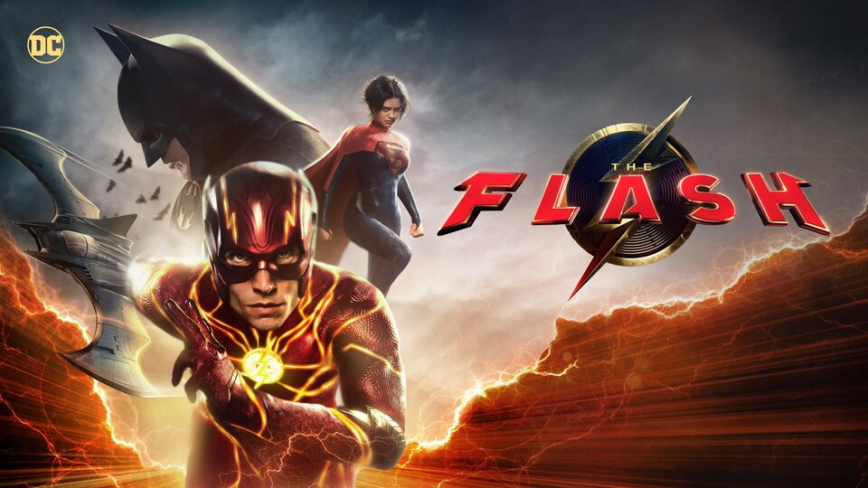
The Flash (2023)
In this installment, Barry Allen, also known as The Flash, uses his super speed to travel back in time in an attempt to save his mother. This action disrupts the timeline, creating an alternate reality where heroes and villains are different. Barry must navigate this new world, fixing his mistake to restore the original timeline and learn crucial lessons about his powers and responsibilities
Watch Now
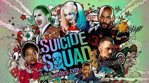
Suicide Squad (2016)
A government agency assembles a team of imprisoned supervillains, dubbed the Suicide Squad, for dangerous missions in exchange for reduced sentences. Led by Rick Flag, the squad must defeat a powerful, ancient witch known as Enchantress, who threatens humanity with her dark magic and monstrous minions
Watch Now
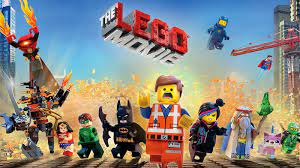
The Lego Movie (2014)
In this animated adventure, an ordinary LEGO construction worker named Emmet is mistaken for the "Special," a prophesied hero who can save the LEGO universe from the tyrannical Lord Business. With the help of new friends, Emmet embarks on a journey to stop Lord Business's evil plan of gluing the world together permanently (
Watch Now
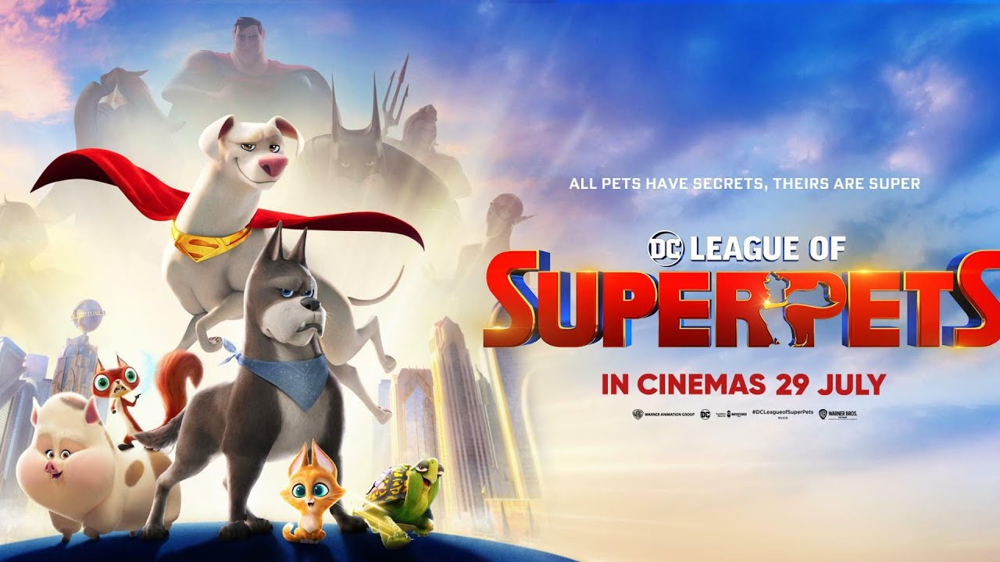
DC League of Super-Pets (2022)
In this animated film, Superman's dog Krypto teams up with a group of shelter pets who gain superpowers. Together, they must save the Justice League, who have been captured by a villainous guinea pig named Lulu. The pets learn to harness their new abilities and work together as a team to rescue their superhero owners
Watch NowSeries
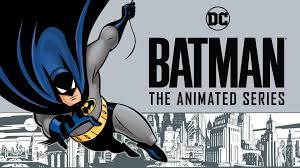
Batman: The Animated Series
"Batman: The Animated Series" is a critically acclaimed TV show known for its sophisticated storytelling, distinctive art style, and excellent voice acting. It modernized Batman's character while maintaining the essence of the source material, leading to multiple Emmy awards. The series' gothic look, inspired by Tim Burton's Batman films, combined film noir and Art Deco styles, creating a unique "Dark Deco" visual.
Watch Now
Batman Beyond
"Batman Beyond" takes place in a futuristic Gotham City where an elderly Bruce Wayne mentors teenager Terry McGinnis as the new Batman. The show explores themes of legacy, technology, and the impact of the Batman identity on Gotham's future.
Watch Now
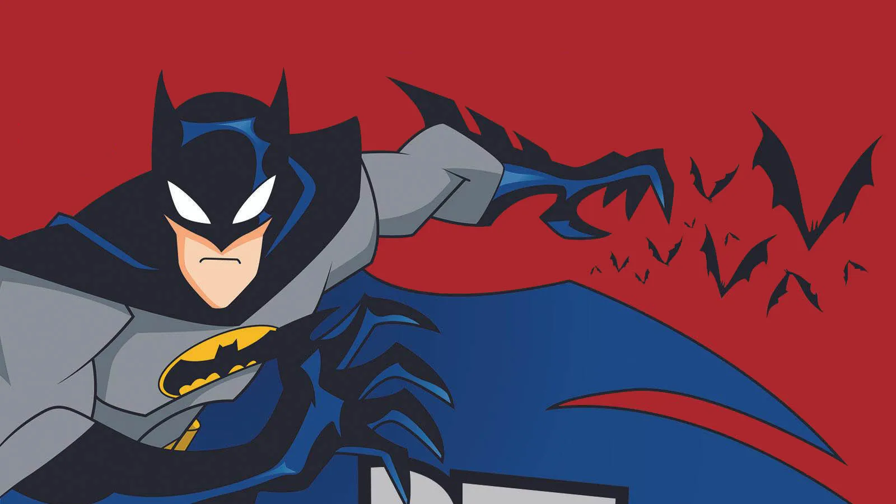
The Batman
"The Batman" is an animated series that ran from 2004 to 2008, focusing on a younger Bruce Wayne early in his crime-fighting career. The show features updated character designs and introduces new villains along with classic ones, offering a fresh take on Batman's early years
Watch Now
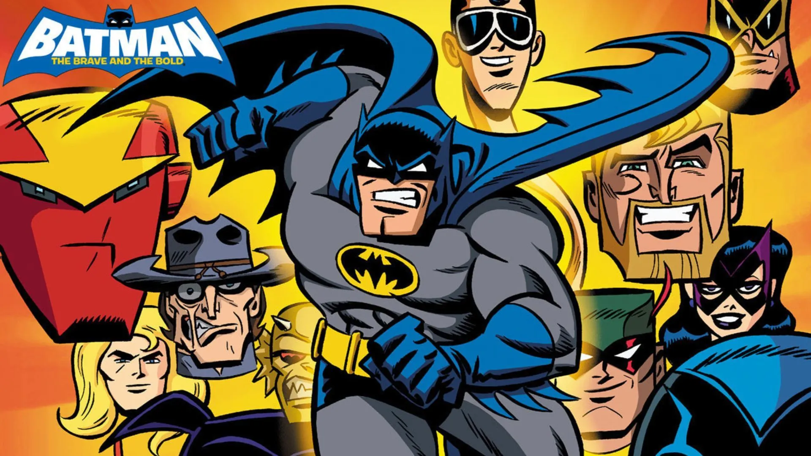
Batman: The Brave and the Bold
"Batman: The Brave and the Bold" is a lighter, more humorous series that aired from 2008 to 2011. It features Batman teaming up with various heroes from the DC Universe, showcasing a wide range of characters and adventures. The show is known for its retro comic book style and tribute to the Silver Age of comics
Watch Now
The New Batman Adventures
"The New Batman Adventures" is a continuation of "Batman: The Animated Series," featuring a revamped animation style and new storylines. It continues to explore Batman's complex relationships with his allies and enemies, maintaining the dark and mature tone of its predecessor
Watch Now
Justice League (2001-2004)
"Justice League" is an animated series that brings together several DC superheroes, including Batman, to fight against various threats. The show is well-regarded for its character development, storytelling, and epic action sequences, contributing significantly to the DC Animated Universe's popularity
Watch NowSeries Appeared On
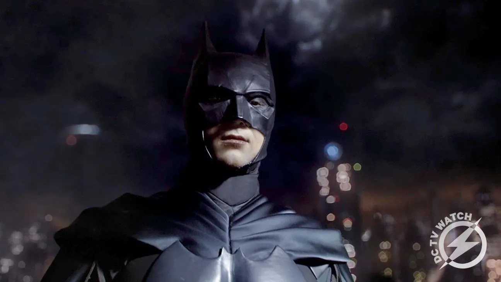
Gotham
"Gotham" is a crime drama television series that aired from 2014 to 2019, developed by Bruno Heller and produced by Warner Bros. Television. The show is set in Gotham City and focuses on the early days of James Gordon as a police detective and the origins of many of Batman's famous villains.
Watch Now